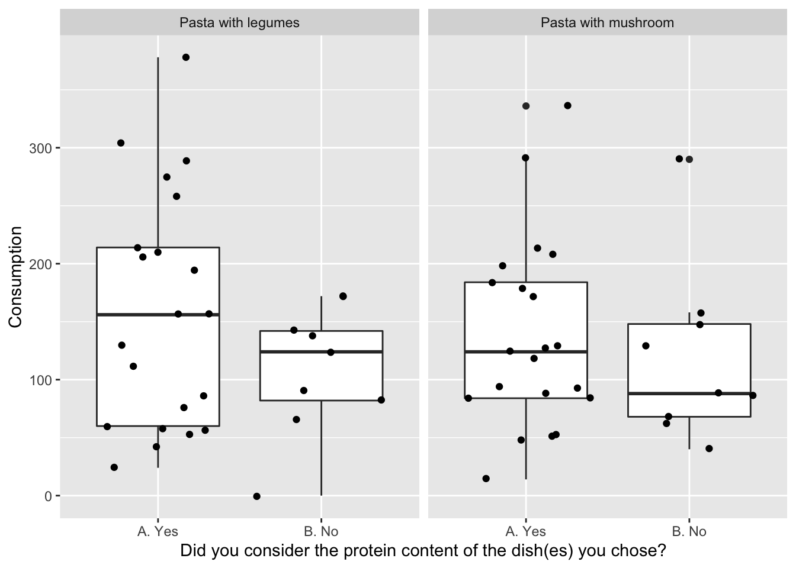

Chapter 5 PCA on survey answers
knitr::include_url("https://youtu.be/embed/NFIkD9-MuTY")We use a package called ggbiplot for plotting the PCA model. It is located on github and installed by:
install.packages('devtools')
devtools::install_github('vqv/ggbiplot')library(ggplot2) # lets plot dadta
library(tidyverse)
library(broom)
library(broom.mixed)
library(lme4)
library(ggbiplot)
library(ggpubr) # lets add stats to the plots
library(knitr) # lets make nice tablesPCA is a tool for looking a correlation structure between variabels, and groupings of samples. All through visualizations.
Check out youtube on the subject for an introduction.
PCA takes numerical data as input, so we use the likert-scales in the form of 1 to 7. Further the yes/no answers are included, and also needs to be changed.
x <- Buffet_survey %>%
mutate(`Did you take food from both Dish 1 and Dish 2? ` =
`Did you take food from both Dish 1 and Dish 2? ` %>%
factor %>% as.numeric(),
`Did you consider the protein content of the dish(es) you chose?` =
`Did you consider the protein content of the dish(es) you chose?` %>%
factor %>% as.numeric()) %>%
filter(Day==1) %>% # the survey part is the same for both days and both stations. That is what we keep.
filter(str_detect(StationName,'leg'))
PCAmdl <- prcomp(x[,c(6:7,9:12)],scale. = T)5.1 Bi-plot
And a plot of the model
ggbiplot(PCAmdl, varname.size = 5) + ylim(c(-4,4)) + xlim(c(-2,5))
What does component 1 (PC1) reflect? What does PC2 reflect?
Lets plot the model and color the samples according to the consumption (of legumes) cutted at the median.
ggbiplot(PCAmdl, groups = factor(x$Consumption>130), ellipse = T,
varname.size = 5) + ylim(c(-4,4)) + xlim(c(-3,5))
5.1.1 Extract the components and run all associations.
We are interested in if any of the likert/survey traits reflected by PCA is correlated with consumption. It is a little complicated, but here goes
scores <- data.frame(Person = x$Person, PCAmdl$x[,1:2]) # take out the first two components.
tbmixed <- Buffet_survey %>%
left_join(scores, by = 'Person') %>%
gather(comp,score,PC1:PC2) %>%
group_by(StationName,comp) %>%
do(lmer(data = ., Consumption~score + Day + (1|Person)) %>% tidy(conf.int = T))… Make a table and a plot of the results.
tbmixed %>%
filter(term=='score') %>%
select(-effect,-group) %>%
kable(x = .,caption = 'Slopes according to components', digits = 2)| StationName | comp | term | estimate | std.error | statistic | conf.low | conf.high |
|---|---|---|---|---|---|---|---|
| Pasta with legumes | PC1 | score | 14.28 | 13.26 | 1.08 | -11.70 | 40.27 |
| Pasta with legumes | PC2 | score | -19.47 | 17.80 | -1.09 | -54.34 | 15.41 |
| Pasta with mushroom | PC1 | score | 5.15 | 10.69 | 0.48 | -15.80 | 26.11 |
| Pasta with mushroom | PC2 | score | -4.93 | 14.43 | -0.34 | -33.21 | 23.35 |
tbmixed %>%
filter(term=='score') %>%
ggplot(data = ., aes(comp,estimate,ymin = conf.low, ymax = conf.high)) +
geom_errorbar(width = 0.1) +geom_point()+
geom_hline(yintercept = 0) +
facet_grid(~StationName) +
theme(legend.position = 'bottom')
Interpret the results.